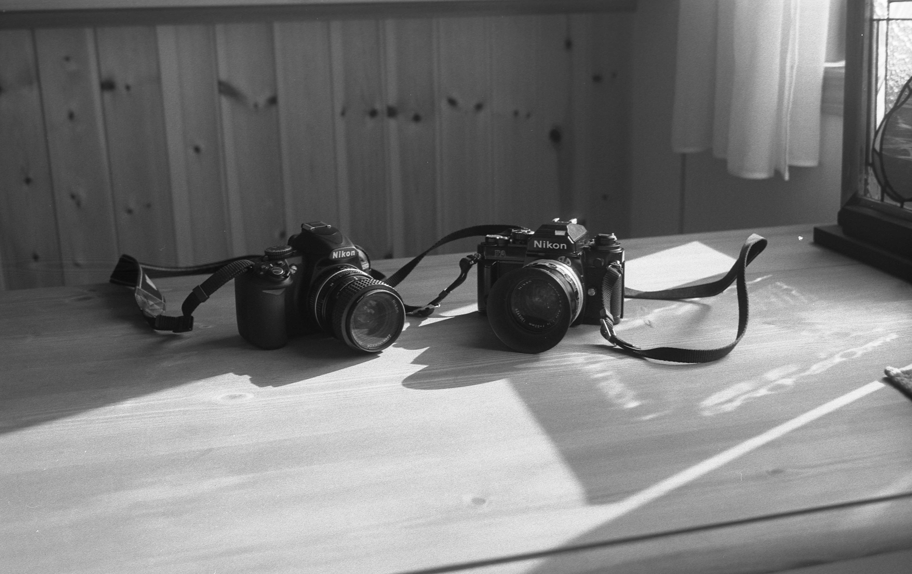
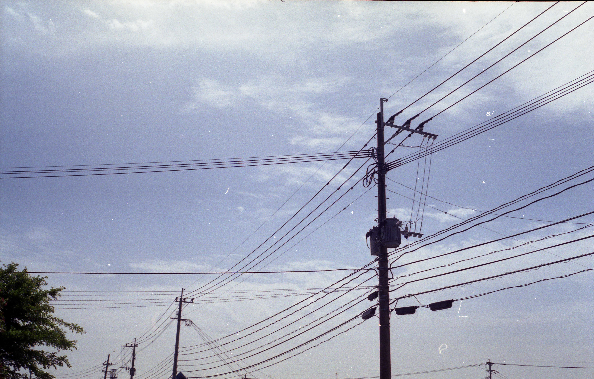
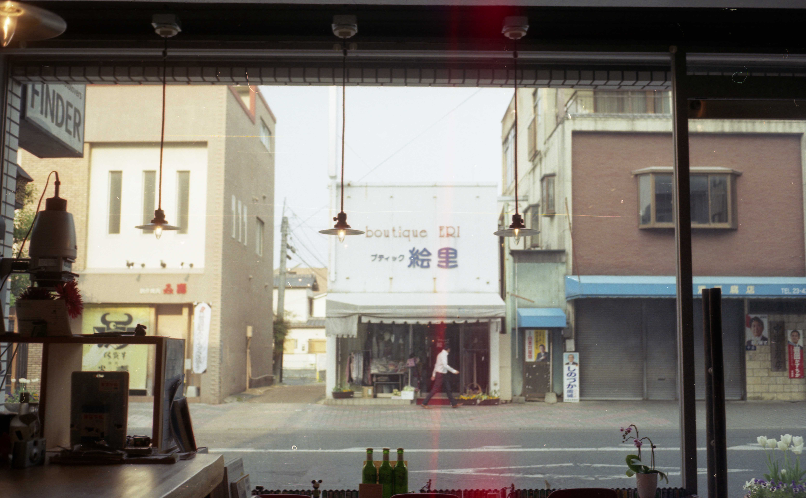

昔撮った写真たち
3/302019
category:photos

camera:Rollei35 film:neopan400
ミリオンバンブーという木。いい影を見ると撮りたくなるのは白黒フィルムあるある。
camera:Rollei35 film:neopan400
多分５月くらい。木漏れ日がきれいだったのでおさめたかった。TOPの写真と同じ公園です。

camera:Rollei35 film:neopan400
左はデジタル。右はアナログ。孫とおじいちゃんって感じ。

camera:Rollei35 film:portra400
霜が綺麗。カラ－ネガもまた味があります。

camera:Rollei35 film:portra400
ちょっと色の情報量落としたようなこの感じが。

camera:Rollei35 film:portra400
佐賀市内。やりたかったことは何となく分かる。しっかしひと気無いな～

camera:Rollei35 film:portra400
電線

camera:Rollei35 film:portra400
佐賀市内。「昭和か」と言いたくなる景色だが割と最近。

camera:Rollei35 film:neopan400
柄のある壁と窓からの光が楽しい。我が家のトイレである。